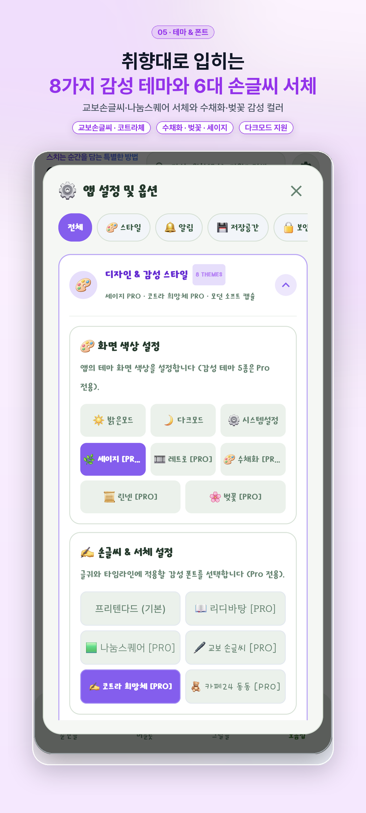
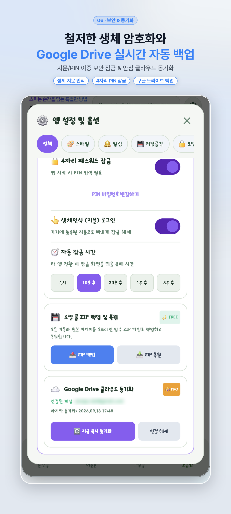
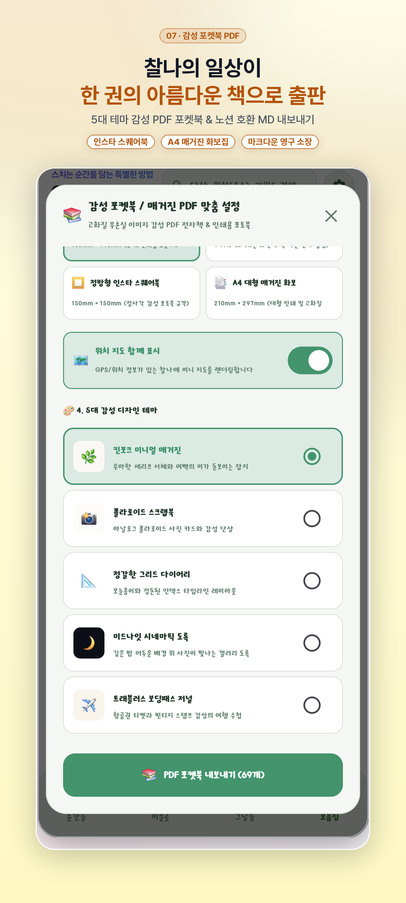

스치는 순간을 담는
가장 특별한 방법,
찰나 (CHALNA)
생각, 사진, 영상, 목소리까지—번거로운 앱 실행 없이 홈 위젯에서 1초 만에 박제하세요. 소중한 발자취 지도와 깃허브 잔디 캘린더, 감성 숏폼 무비가 당신의 하루를 아름답게 기억합니다.

기록의 번거로움을 지우고,
본질적인 감동만 남겼습니다
복잡한 설정이나 로그인 없이 스마트폰을 켜자마자 내 생각과 순간을 담아냅니다.
1초 퀵 위젯
앱을 열 필요조차 없습니다. 홈 화면 4×2, 4×1 위젯에서 터치 한 번으로 메모, 사진, 음성을 즉시 남기세요.
Gemini AI 실시간 STT
운전 중이거나 걷는 동안 떠오른 아이디어를 목소리로 녹음하면, AI가 오타 없이 또렷한 텍스트로 자동 받아적어 줍니다.
발자취 여정 지도
사진에 깃든 위치(GPS)를 자동으로 추출하여 여행 동선과 장소별 사진 핀을 아름다운 지도 위에 한눈에 그려줍니다.
365일 잔디 캘린더
개발자의 깃허브 잔디처럼 매일의 기록 여정을 시각화합니다. 포토 캘린더와 연속 기록 스트릭으로 습관을 완성하세요.
순간을 모아, 영원으로 엮어내는 도구들
찰나가 제공하는 6가지 시그니처 경험을 직접 확인해 보세요.
스마트폰 홈 화면에서
터치 한 번으로 즉시 박제
번거롭게 앱 아이콘을 찾고 로딩을 기다릴 필요가 없습니다. 홈 화면 4×1, 4×2 크기의 감성 위젯에서 생각나는 즉시 단상, 무음 스냅, 미니 클립, 음성 녹음을 기록할 수 있습니다.
- 단상 메모 & To-Do 체크리스트 원터치 작성
- 최대 10장 무음 고속 촬영 및 콜라주 스냅
- 위젯 테마(투명도, 다크/라이트) 완벽 커스텀

단상, 사진, 영상, 음성이
하나의 흐름으로 이어지는 피드
모든 찰나는 시간 역순으로 아름답게 나열됩니다. 메모 본문 속의 체크박스는 탭 한 번으로 완료선을 그을 수 있고, 위치 정보가 깃든 미니 맵 카드에서 원터치 내비게이션으로 길찾기까지 지원합니다.
- Gemini AI 기반 음성 녹음 텍스트 자동 변환(STT)
- 해시태그(#여행, #카페) 자동 추출 및 스마트 필터
- 길게 눌러 텍스트 원터치 복사 & '생각 덧붙이기' 스레드
내가 머문 모든 공간이
생생한 여행 지도로 피어납니다
구글 지도 기반의 발자취 클러스터링으로 내가 다녀간 동네와 국내외 여행지를 감각적으로 시각화합니다. 핀을 터치하면 그 장소에서 찍은 찰나 사진과 단상을 곧바로 열람할 수 있습니다.
- 사진 EXIF 메타데이터에서 GPS 위치 자동 추출
- 네이버 지도, 카카오맵, 티맵, 구글맵 원터치 길찾기 연동
- 이동 동선 폴리라인 연결 및 지도 스타일 전환

깃허브 잔디밭과 포토 캘린더로
기록의 성취감을 매일 만끽하세요
매일 기록을 남길수록 초록빛 잔디가 풍성하게 채워집니다. 연속 기록(Streak) 달성 현황과 월별 대표 사진 썸네일로 가득한 포토 캘린더가 당신의 소중한 한 해를 돌아보게 돕습니다.
- 365일 GitHub 스타일 Heatmap 잔디 밭
- 일자별 대표 사진이 깃든 감성 포토 캘린더
- 월간/연간 기록 통계 차트 및 인사이트 제공

내 일상이 시네마 영화와
매거진 포켓북으로 탄생합니다
원하는 기간의 기록을 선택하고 버튼을 누르면, 감성 BGM과 타이틀 자막이 어우러진 1080p 릴스 비디오(`찰나무비`)와 실제 인쇄 가능한 A4/문고판 `PDF 포켓북`이 1분 만에 완성됩니다.
- 1080p Full HD 감성 숏폼/릴스 비디오 자동 렌더링
- 5대 테마 감성 PDF 전자책 및 인쇄용 포켓북 출판
- 옵시디언(Obsidian) & 노션(Notion) 보관용 오디오 Markdown 내보내기

8대 감성 테마팩과
철통같은 생체 보안 잠금
미드나잇 다크, 소프트 크림, 빈티지 페이퍼 등 8가지 전용 테마와 6종 아날로그 손글씨 서체로 앱을 커스텀하세요. 지문 인식과 PIN 잠금으로 내밀한 사생활을 안전하게 지킵니다.
- 온디바이스 생체인식(지문, 얼굴) 및 4자리 PIN 잠금
- 8가지 테마 컬러 & 나눔손글씨, 마루부리 등 감성 서체
- Google Drive 비공개 자동 백업 및 무손실 ZIP 기기 이전

한 화면 한 화면,
정성을 담아 빚어냈습니다
카드를 클릭하시면 고해상도 전체 화면으로 감상하실 수 있습니다.


자주 묻는 질문과 답변
찰나(CHALNA)에 대해 궁금하신 점들을 모았습니다.
찰나는 [설정] ➡️ [구글 드라이브 백업/복원]을 통해 새 폰에서 구글 계정으로 로그인한 뒤 복원 버튼을 누르면 모든 사진과 일기가 1초 만에 복원됩니다. 또한 [데이터 전체 내보내기(ZIP)]를 통해 PC나 외장 메모리로 안전하게 백업할 수도 있습니다.
네! 찰나는 로컬 퍼스트(Local-First) 앱으로 네트워크 연결 없이도 모든 기록, 사진 촬영, 타임라인 검색, 포켓북 PDF 제작이 100% 정상 작동합니다. (네트워크가 연결되면 백그라운드에서 날씨 정보 및 클라우드 동기화가 자동으로 진행됩니다.)
최신 Google Gemini AI 기술을 적용하여 작은 속삭임이나 웅얼거림도 놀라운 정확도로 문맥에 맞게 한글로 변환합니다. 음성 원본 또한 보존되어 타임라인에서 언제든지 재생해 들을 수 있습니다.
[모음집 탭] ➡️ [마크다운 내보내기]를 선택하시면 표준 Markdown(`.md`) 문서와 미디어 첨부 파일 폴더로 즉시 내보내집니다. 특히 음성 녹음의 경우 HTML5 인라인 오디오 플레이어 코드가 자동 삽입되어 옵시디언 볼트에서 바로 클릭해 청취할 수 있습니다.
찰나는 개인정보를 존중하여 필수 권한을 두지 않습니다. 카메라, 마이크, 위치 권한은 해당 기능(스냅 촬영, 음성 녹음, 지도 핀)을 사용할 때만 선택적으로 요청되며, 권한을 허용하지 않아도 텍스트 단상 기록과 기본 일기 기능은 온전히 무료로 이용하실 수 있습니다.
지금, 당신의 찰나를
기록하기 시작하세요
오늘의 스치는 생각, 스쳐 지나가는 계절, 소중한 사람들과의 발자취까지.
1초 만에 담아내는 나만의 감성 아카이브를 만나보세요.